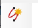

Map Tools
The Map Tools tab includes tools that enable the user to perform various searches (Predefined Search, Asset Quick Search, and Circuit Search) on the map area and also use additional tools such as Measure and Sketch pad.
Misc
Misc group can be used to search GIS-enabled data on the map. The user can also create and save predefined searches using the Search Builder.
Search builder.
Search builder icon can be used to create and save predefined searches that the user can use to search GIS-enabled data on the map. The saved searches are available on the Predefined Searches tab.

To create a predefined search:
-
In the Databases list, select the check boxes corresponding to one or more databases. Based on the databases selected, the table list is populated.
-
In the table list, select a table. The Select Items to view in the Report section displays the table attributes.
-
Under Optional Parameters, the user can add one or more optional parameters by selecting in the lists.
- Save the predefined search.
Predefined searches
The Predefined searches icon can be used to choose a predefined search to run a search. Selecting the icon displays the existing predefined searches on the Predefined Searches tab.
located in the leftmost pane of the map.
Misc group can be used to use the Sketch pad tool and the Overview
tool associated with the Map.
Sketch Pad
The user can use the Sketch pad tool to take a snapshot of the map that the user has opened recently. The Sketch pad displays the snapshot on a new page. Using the Sketch pad, the user can draw or make markings on the captured snapshot. The user can copy the modified snapshot to the clipboard or save it as an image file.
The following table explains the tools and options available with the
Sketch pad.
| Field | Icon | Description |
|---|---|---|
| Freehand Sketch |  | Enables the user to draw a freehand on the sketchpad. A freehand is a drawing completed using only the mouse pointer without taking help of any devices, measurements, or geometry. |
| PolyLine | Enables the user to draw a polyline. A polyline is a continuous line composed of one or more line segments. | |
| Spline | Enables the user to draw a spline. A spline is a continuous curve constructed so as to pass through a specified set of points and have a certain number of continuous derivatives. | |
| Arc | Enables the user to draw an arc. An arc is a part of a curve, especially a part of the circumference of a circle. | |
| Rectangle | Enables the user to draw a rectangle. A rectangle is a plane figure with four straight sides and four right angles. It has unequal adjacent sides, in contrast to a square. | |
| Circle |  |
Enables the user to draw a circle. A circle is a round plane figure whose boundary (the circumference) consists of points equidistant from a fixed point (the center). |
| Polygon | Enables the user to draw a polygon. A polygon is a plane figure with at least three straight sides and angles, and typically five or more. | |
| Text | Enables the user to add text to the sketch. | |
| Save Image | Enables the user to save the current sketch as an image. The following formats are allowed: PNG, JPEG, GIF, BMP, TIFF, EMF, WMF, and EXIF. | |
| Print the Sketch | Prints the current sketch. | |
| Open an existing Image | Opens an existing image. | |
| Blank Canvas | Opens a blank canvas. | |
| New Map | Clears any changes made to the map. | |
| Eraser | Erases content from the sketch. | |
| Change the Font | Changes the font, font size, and font style. | |
| Line Color | Sets the line color. | |
| Fill color. Line Style | Sets the color. Sets the line style. | |
| Line Width | Sets the line width. | |
| Undo | Undoes a previous action. | |
| Redo | Redoes an action. | |
| Copy Sketch to Clipboard | Copies a sketch to the clipboard. | |
| Delete the Sketch | Deletes a sketch. |
Overview
Overview feature is used for a magnified view or an overview of the map. As the user pans around the map, the Overview page is refreshed simultaneously. An orange rectangle is displayed when the map is zoomed more than the Overview page.
Asset Quick Search
The Asset Quick Search group contains the Quick Search tool that enables the user to quickly search objects on the map.
Quick search
The Quick Search tool displays a list of object types. This list is displayed as per the user role. In the list, select an object. In the lower list, enter a number to search the object on the map. If the object is found on the map, the map is panned to the location of the object, and the object is displayed as selected.

Circuit Isolation
The Circuit Isolation group displays the icons that enable the user to search circuits and perform the related actions on the circuits.

Isolate Circuit
The Isolate Circuit icon displays the Isolate Circuit page. On this page user can do the following:
-
Search a circuit by entering the circuit name in the Enter Circuit Name box.
-
Open a map that displays the isolated circuits normally and the other circuits grayed out or invisible based on the settings by clicking the Isolate Circuit button.

Clear Circuit Isolation
The Clear Circuit Isolation icon is enabled when circuits on the map are isolated. Revoke the circuit isolation performed using the Isolate Circuit icon by clicking the Clear Circuit Isolation icon.
Distribution Circuit Search
The Distribution Circuit Search icon is used to open the Transmission Circuit Search page. On this page, the Region list is populated.
To enable the transmission circuit search page:
-
In the Region list, select a region. The Substation grid is populated based on the selected region.
-
In the Substation grid, select a substation. The Circuit grid is populated.
-
In the Circuit grid, select a circuit. The Isolate Circuits button and the Call Parameters button are enabled, as applicable.
Call Parameters
The user has the option of making various edits on the parameters from the Trace, the Layer Group on circuit parameters and the Trace direction, Start point and where the next direction in the circuit is. The start point is where the circuit is set to start from.
When the Call Parameters button is clicked, then, the following
prompt is shown:
Work Location
These fall under the Region and are the sectional locations that contain Substations where the circuits are connected.
Sector
Similar to Work Location, Regions are also divided into Sectors which in turn contain Substations in them.
Transmission Circuit Search
The Transmission Circuit Search icon can be used to open the Transmission Circuit Search page.
The Grid or Work Group lists are set to the default grid, and
the Switching Center grid is populated with the Switching
centers associated with the selected grid or work group.

After selecting switching centers, the Voltage grid is populated
based on the voltages of the circuits associated with the selected
switching center. Each distinct voltage is displayed along with the
number of circuits of that voltage associated with the selected
switching centers.
Selecting a voltage from the Voltage grid displays the circuits associated with the selected switching center of the selected voltage in the Circuit grid.